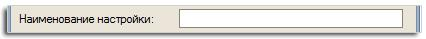
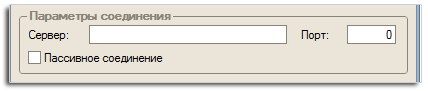
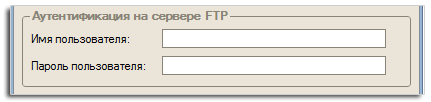
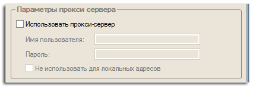
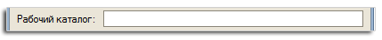
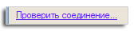

Настройки FTP-серверов
Элементы справочника содержат настройки для доступа к определенному FTP-серверу. Эти настройки используются в механизме распределенных баз данных, а также могут быть задействованы в других элементах конфигурации.
 |
Наименоваение настройки (например, "Наш сервер" или ftp://ftp.base111.ru/) |
 |
Параметры соединения с сервером FTP. Сервер — доменное имя или IP-адрес FTP сервера. (Например ftp://ftp.base111.ru/, 192.168.84.1, ftp://LOCALFTP) |
 |
Если сервер предполагает аутентификацию, то в поля "Имя пользователя" и "Пароль" вводятся соответствующие реквизиты. |
 |
Если вы осуществляете выход интернет посредством прокси-сервера, необходимо указать его параметры. За получением параметров, обратитесь к администратору вашей сети. |
 |
Рабочий каталог на FTP-сервере. Если FTP-сервер содержит несколько каталогов, то в этом поле можно указать конкретный каталог для работы. Система будет создавать его в случае отсутствия и работать только в нем. Каталог задается в формате прямых слэшей / и обязательно с ведущем слэшем впереди. Правильно:
Неправильно:
|
 |
Проверка соединения с заданными параметрами |